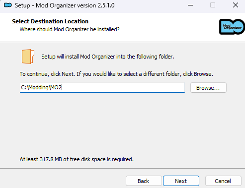

Advanced Installation
This page walks you through installing everything manually. It uses Mod Organizer 2 and covers all required mods step by step. If you want the automated version, use the Wabbajack install instead.
Prerequisites
A Good Archiving Tool
This is a tool for extracting and manipulating .zip, .rar, .7z and other compressed files.
VC++ Runtime Libraries
This is a compilation of old and new runtime libraries. Using this seems to fix some issues with running the game on modern systems. A lot of other older games need these as well so it doesn’t hurt to have them installed either.
- Download the file from Techpowerup
- Extract the folder using one of the the previously mentioned archiving tools.
- Open the folder
- Right click install_all.bat and run as administrator
Graphics Drivers
Ensure that your graphics drivers are up to date.
- Nvidia Graphics Drivers can be downloaded through GeForce Experience
- AMD Graphics Drivers can be downloaded through AMD Adrenalin
- Intel Graphics Drivers can be downloaded through Intel Arc
Nexus Mods Account
If you do not already have a nexus mods account, you will need one. You can create an account here.
Mod Organizer 2
Mod Organizer 2 (MO2) is an open source mod manager, if you've ever modded Bethesda games you'll recognize it. MO2 doesn't install mods directly into the games folder but instead creates a safer environment that the game reads from.
Benefits include:
- Safe mod installation uninstallation
- Being able to modify mod install order at any point
- Multiple mod profiles
- Non destructive mod management keeps the game files clean
Installation
- Download the latest Mod Organizer 2
- Once the download has finished, run the installer
- Accept the license, click Next
- When asked about the install location, use the default or select what best suits you, I do as follows. 
- Click next
- Select "Recommended Install"
- Click next
- When asked to select menu folder, keep the default or set your preferred name
- Click next
- Decide whether you want a desktop shortcut or not
- Click Next
- Click Install
- Once the install is complete, ensure that Launch Mod Organizer is ticked and click Finish


Configuring Mod Organizer
- Click next
- Select "Create a portable instance"
- Select "The Witcher Enhanced Edition"
- Use the defaults, keep automatic archive invalidation checked
- Click next
- Default Location should look the same as MO2's installation if you selected a portable instance
- Click next
- Click finish
- Choose whether you'd like to see the tutorial
- Close the wiki popup
- Select Import Nexus Categories
Nexus Mods
- You should be asked to set up Nexus mod integration, "nxm links", select Yes
- Sign in, if necessary, and authorize MO2 integration with Nexus Mods
Nexus Mods MO2 Integration
- Download the indicated file(s)
- Open the Downloads tab in MO2
- Double-click on the mod to install it
- Most Witcher mods will need some extra work to be formatted
- Most Mods should ALWAYS have this structure in order to make sure other mods files are being properly overwritten and so that multiple of the same file are not loading at the same time. Raw mod files refer to the actual texture/script files themselves. data > Override > “raw” mod files
Installing Witcher Mods in MO2
Understanding Nexus
When linked to a mod, select the "Files" tab.
When the guide says to install a mod, it will be formatted as "Main File - Example 1.5", this is referring to the mod's category on Nexus and the file name. Unless otherwise Specific
Mod Installation Procedure
- Enter the mod manager downloads tab
- Double-click the mod inside the downloads panel, this will start the installation process and tell you the mod is not formatted in the expected way
- In this case we only want The Witcher Texture overhaul, an easy way to eliminate all other options is to right click “The Witcher Texture Overhaul” and select “Set as <data directory>”
- This will leave all the loose files inside the data directory, however, we need them inside an Override folder. Right click <data> and select “Create directory…”, name it Override
- Move all the loose texture files inside the Override folder, an easy way to do this is to select the top file, scroll to the bottom Shift + Click the bottom file and this will select all files, move them to Override. Your final data structure should look like this.
- Click OK
Example Mod Installation
Graphical Improvements
- Main Files - Sound and Texture Overhaul
The Witcher Overhaul Project
Replaces a large amount of vanilla textures with HD textures.
- Main Files - The Witcher - Realistic Moon HD
Realistic Moon HD
Replaces the moon with a higher resolution and more realistic texture.
- Main Files - Rain fog remover
Rain Fog Remover
Replaces radioactive looking fog that occurs when raining with a transparent texture, makes rain look normal.
- Main Files - Kaer Morhen W3 Style HD Retexture
Kaer Morhen Witcher 3 HD Retexture Remaster (with unique textures)
HD Retexture of Kaer Morhen.
- Main Files - Main File
- Optional Files - OPTIONAL DARK SOIL TEXTURE FOR A MORE CONSISTENT LOOK
No More Radioactive Wheat - Natural Grain Texture
Changes the wheat texture to be less of a bright yellow/green texture.
- Main Files - HD Light Sources
Improved HD Lightsources
Higher res textures for light sources
- Main Files - Distinctive Raven Armors No Headband
- Optional Files - Alternate Order and Elven Raven Armor
Distinctive Raven's Armors
Makes the Raven Armors more distinctive between their variants and upscales their textures.
- Main Files - Perfect Blood Upscaled And Retouched
The Witcher Perfect Blood Upscaled and Retouched
Note: This is partially my mod, I updated it and upscaled the textures myself. This mod improves the textures of blood and tweaks the effect settings
- Main Files - School of the Wolf
School of the wolf
Differentiates all witchers in the game and reworks Eskel and Lambert's faces to more closely resemble their Witcher 3 counterparts.
- Main Files - Natural Shani HD Upscaled
Natural Shani HD Upscaled
Upscaled version of Natural Shani. Provides a more practical look for Shani.
- Main Files - Shani_w3Face
Hiuuz’s Witcher 3 Shani for The Witcher
Makes Shani's face look more like her Witcher 3 counterpart.
- Main Files - Shani_w3Face
Thaler HD Retexture
High quality retexture for Thaler
- Main Files - Kalkstein HD Retexture
Kalkstein HD Retexture
High quality retexture for Kalkstein
- Main Files - Ramsmeat HD Retexture
Ramsmeat HD Retexture
High quality retexture for Ramsmeat
- Main Files - Coleman HD Retexture
Coleman HD Retexture
High quality retexture for Coleman
- Main Files - Guards HD Retexture
Guards HD Retexture
High quality retexture for Guards
- Main Files - TW2 Style Zoltan
Zoltan Inspired by the Witcher 2
Retextures Zoltan to look more like his Witcher 2 counterpart.
- Main Files - Foltest inspired by The Witcher 2
Foltest Inspired by the Witcher 2
Retextures Foltest to look more like his Witcher 2 counterpart.
- Main Files - TW1 NPC Eye Overhaul
NPC Eye Fixes and Overhaul
Adds realistic HD eyes of various colors for several NPCs game-wide and fixes some quest & lore inconsistencies with eye color.
- Main Files - Lore Triss with Sodden Scars
Lore Triss with Sodden Scars
Lore image of Triss from the book description, including blue eyes and scars.
- Main Files - Triss TW2 outfit with original skin tone face and hair
Triss inspired from The Witcher 2
Retextures Triss's outfit to look more like her Witcher 2 counterpart
- Main Files - HD Blue Triss Eyes
Full HD Blue Eyes For Triss
HD Upscale of Triss Blue Eyes
- Main Files - Dandelion_w3Face
Hiuuz's Witcher 3 Dandelion for The Witcher
Replaces Dandelion's face to look more like his Witcher 3 counterpart
- Main Files - Geralt_retextured_v1p2
Geralt Face and Leather Jacket Retexture
Retextures Geralt's face and leather jacket but we'll be replacing his face with a version I prefer in the next mod.
- Main Files - Geralt_retextured_v1p2
Geralt Face and Leather Jacket Retexture
Retextures Geralt's face and leather jacket but we'll be replacing his face with a version I prefer in the next mod.
- Main File - Striga Scar and Arm Fix
Striga Scar Alternatives and Tweaks for Hiuuz's Witcher 3 Geralt Face for The Witcher
Updated version of Hiuzz's Witcher 3 Geralt face which adds the Striga scar and adds some fixes to Geralt's mods.
- Main Files - Reverend Beard Texture Fix
Reverend Beard Texture Fix
Fixes a seam issue with the Reverend's Beard and upscales his textures.
- Main Files - Witcher HUD Compilation - Override
The Witcher HUD Compilation
THIS MOD IS ENTIRELY OPTIONAL. This is an opinionated compilation of hud and UI mods, including assets from Rise of the White Wolf, Black Edition, Inferno Edition, and the author's own tweaks. So far, this has been my favorite UI mod.
- Main Files - Movies
Skip intro - straight to the Main Menu
This mod allows your game to skip intro videos and goes straight to the main menu.
- Main Files - 4K Game Movie Package
Movie Upscale Project (4K)
All movies, cutscenes and cards are upscaled and refined for 4K resolution.
Bug Fixes & Tweaks
- Main Files - Project Mersey - The Witcher Fix Pack
Project Mersey - The Witcher Fix Pack
Fixes numerous bugs, implements leftover content that was cut, and adds some QoL improvements, such as item stacking and increased Geralt speed.
Note: Do not change anything about the file structure during installation.
- Main Files - Morenn Storage and Romance Fix
Morenn Storage and Romance Fix
Fixes an issue with Morenn's romance dialogue and adds a storage inventory similar to innkeepers to her dialogue.
- Main Files - TW1 All Herbs
TW1 All Herbs
Increases herb spawn amounts, making the game far less tedious.
Note: Do not install with "Han Gives Han NOT Berbercane."
- Main Files - Missing Kalkstein and Leuvaarden Clues Fix
Missing Kalkstein and Leuvaarden Clues Fix
Makes the missing clues for Suspect: Kalkstein and Suspect: Leuvaarden available.
- Optional Files - Alternate Version
Leuvaarden Buys Salamander Pins
Allows Leuvaarden to buy your Salamandra badges. Includes a balanced version and alternate version.
- Main Files - Celina Julian Fix
- Optional Files - English Voice Files
Celina and Julian Fix
Fixes issues with a certain quest involving Celina in Chapter 4 and includes added dialogue not present in the original mod.
- Main Files - More Talents (Balanced)
More Talents (Balanced)
Allows you to get more talents around level 38 without excessive grinding or completing certain tasks.
- Main Files - Epilogue cutscene sword fix
- Main Files - Misc Fixes
- Main Files - Steel for Dagon
Miscellaneous Fixes
Includes fixes to cutscenes, monster vulnerabilities, and other tweaks.
- Main Files - The Order and Scoia'tael Ranks
- Update Files - Scoia'tael part 2
The Order and Scoia'tael Rank Rebalance
Rebalances and organizes level and experience values for characters from the Order and Scoia'tael.
- Main Files - Endurance Talents Fix
Stamina Talents Fix
Fixes issues in two stamina talents.
- Main Files - ACWR - A Cutscene Weapon Replacer
ACWR - A Cutscene Weapon Replacer
Shows the actual weapons you're carrying in cutscenes.
- Main Files - Sword Stats Fixes
Sword Stats Fixes
Corrects errors, inconsistency and imbalances with sword stats.
Installing Reshade
- Download the latest Reshade WITH FULL ADD-ON SUPPORT
- Run the setup tool
- Find and select Witcher.exe inside the system folder of your game. Typically:
"Steam\steamapps\common\The Witcher Enhanced Edition\Data\Override" - Select Vulkan as the rendering api, since we're using dxvk to convert d3d9 commands to vulkan
- Checkmark the following packs
- SweetFX by Ceejay.dk
- Legacy effects
- FXShaders by luluco250
- qUINT by Marty McFly
- Color effects by prod80
- dh-reshade-shaders by AlucardDH
- Insane-Shaders by Lord of Lunacy
- AstrayFX
- iMMERSE by Marty Mcfly
- Click run inside of MO2, from now on only launch the game through MO2. Mods will only load through MO2
- Once loaded into the game, hit "home" on your keyboard to open reshade.
- Click Skip Tutorial
- Select the dropdown at the top, scroll down until you find WitcherReshade.ini, select the file and click Select
- Select Performance mode at the bottom of the page. This will fully compile and lock in settings, netting you more performance. If you want to change specific settings in filters you can turn it off and on at your will.
- Click on the add-ons tab
- Enable "Copy depth buffer during frame to prevent artifacts", this should also enable "Copy depth buffer before clear operations". This will allow reshade to access the depth buffer and inject ambient occlusion and other effects.
- That's it! Your game should now be modded and playable as intended. You can continue to add some more overhaul mods that couldn't be included in Wabbajack or continue playing!